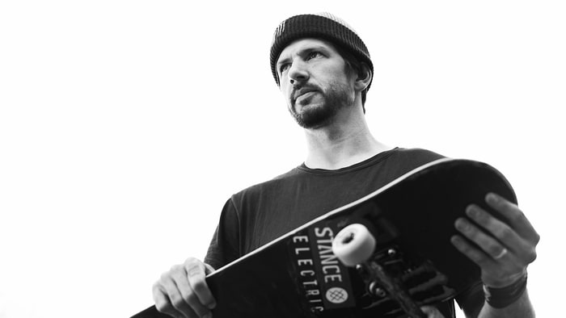
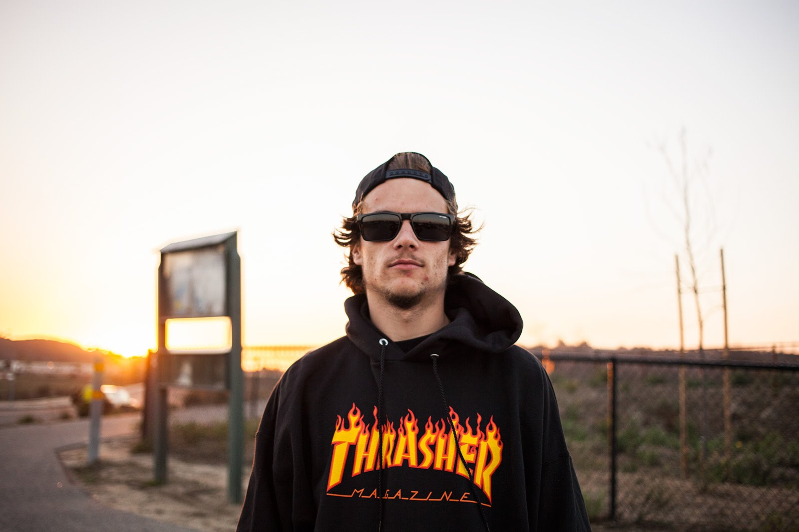

Começamos com o Chris Cole, em primeiro lugar por seus fãns recebeu medalha de Prata, entre os mais "queridos" do Skateboarding como Chris Joslin com a medalha de Bronze em terceiro lugar, e Cole Wilson com o primeiro lugar com a medalha de Ouro.
Idade: 36 | Regular | Anos Pro: 15 | Cidade natal: Langhorne, Pensilvânia | Última Parte do Vídeo: "Chris Cole: DC Never Been Done" | Two-time Thrasher "Skater do Ano" | Filmer: Chris Ray
Chris Joslin
Idade: 22 | Regular | Anos Pro: 2 | Cidade natal: Jardins havaianos, Califórnia | Última Parte do Vídeo: The Berrics, "Ode to London" | Medalhista de ouro da Real Street 2016, medalhista de bronze de 2017 | Filmer: Devin Lopez
Cole Wilson

Idade: 26 | Regular | Anos Pro: 1.5 | Cidade natal: Louisville, Kentucky | Last Video Part: Ender, "Oddity" da Fundação | Medalhista de ouro da Real Street 2017 | Filmer: Don Luong.